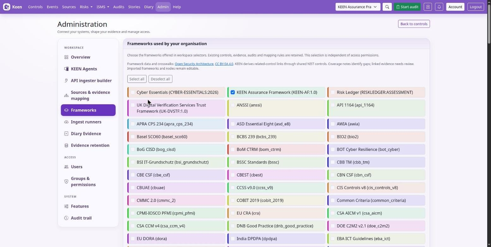
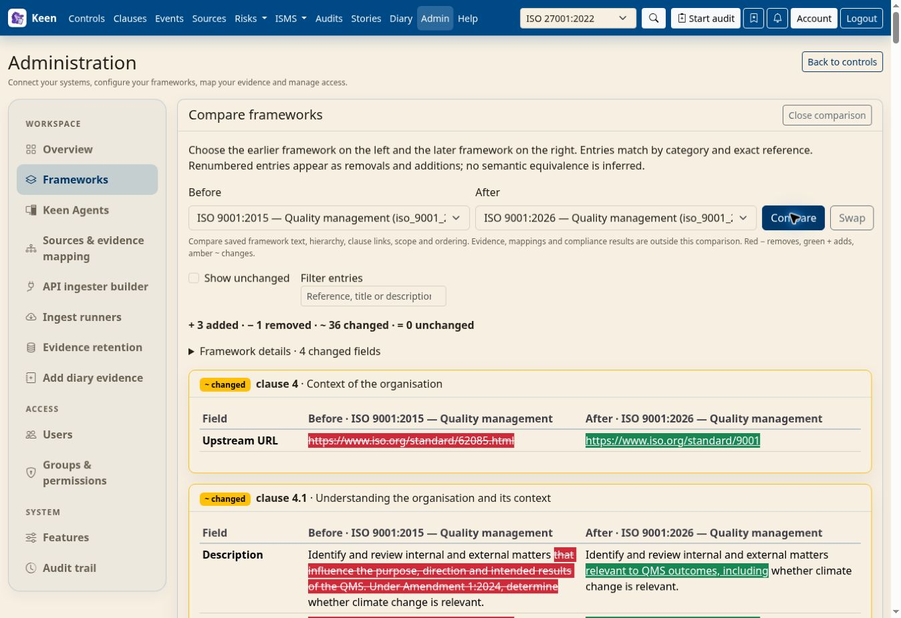
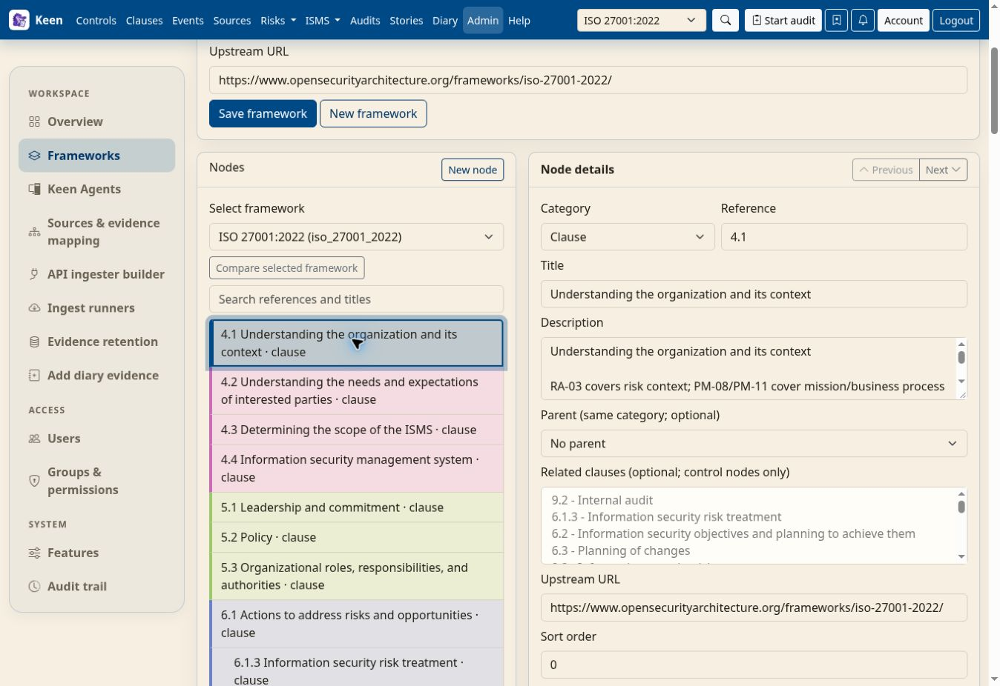
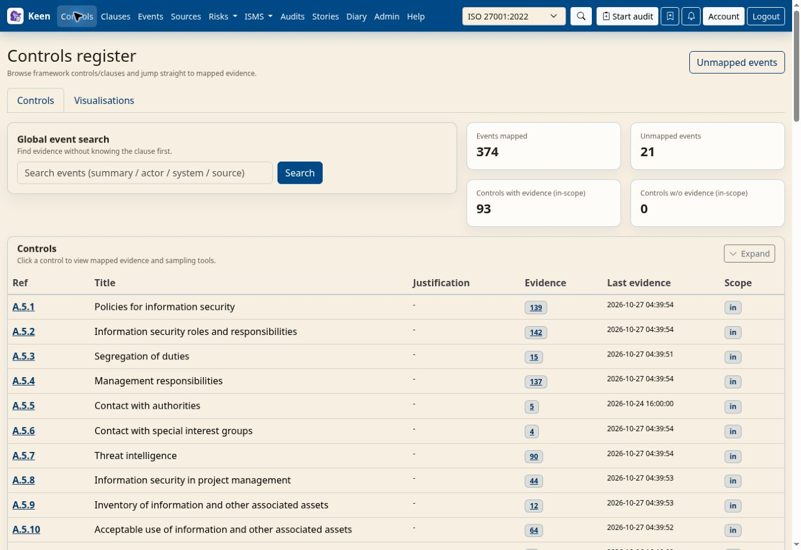
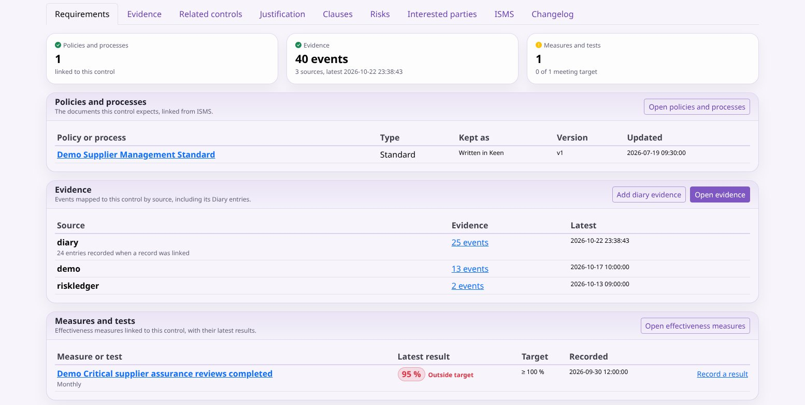
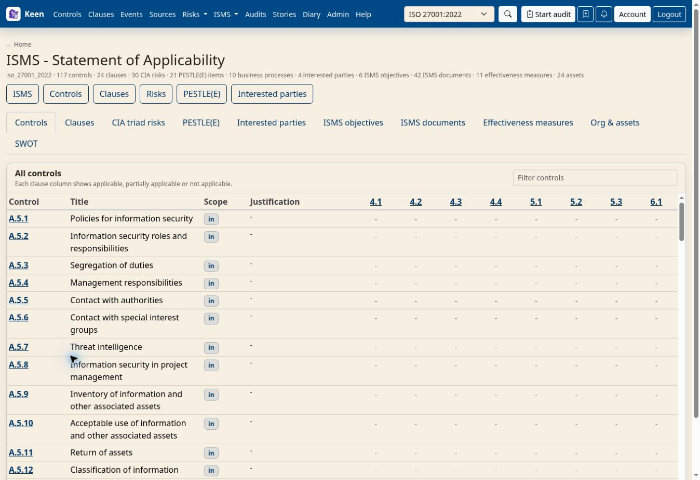
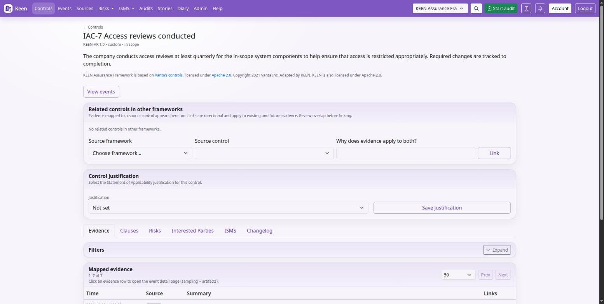

Using Keen
Frameworks, scope and shared evidence
Chapter 2 of 17
Frameworks, controls and scope
This chapter explains what a framework is in Keen, how controls and clauses are organised, how to decide what is in scope, and how one piece of evidence can count for more than one framework. Editing frameworks is an administrator's task; reading and scoping them is everyone's.
- Framework
- A catalogue you assess against, such as KEEN-AF or ISO/IEC 27001:2022. Keen ships 94 of them.
- Control
- A practice you can show evidence for, such as “backups are tested”.
- Clause
- A management-system requirement. Clauses can form a hierarchy and link to the controls that satisfy them.
- Scope
- Your decision about which controls and clauses apply to your organisation, and why.
Manage frameworks in the application
Open Admin → Frameworks to browse the catalogue. Search names and descriptions, narrow by region or Enabled only, and page through the cards. Tick the frameworks your organisation uses, choose the organisation default and select Save organisation selection. Open a card’s Edit action to reach its node editor; Back to catalogue returns to the cards.


Compare opens a before-and-after comparison of two catalogues. Review added, removed and changed nodes, filter entries or show unchanged entries. Matching uses category and reference: a renumbered node appears as a removal and addition. The comparison concerns saved catalogue content and structure; it does not assess evidence or certify equivalent requirements.




Administrators maintain frameworks in Admin → Frameworks. Everyday work there is small: pick a framework, adjust a node, save.
- Choose Select framework to edit an existing framework, or New framework to create one. Enter a slug, name, version, description and optional upstream URL, then Save framework.
- Choose New node to add a Clause, Control or Custom node. Give it a reference and title, then a description, an optional parent of the same category, an upstream URL, a sort order and its In scope setting. A control can also link to related clauses. Choose Save node.
- To edit a node, select it in the searchable tree. The node you are editing is marked in the tree and stays marked after you save.
Create a replacement to change an identity. A slug, a reference and a category identify a framework or node across the whole application, so the editor does not rename them. To change one, create the replacement and move the relationships deliberately.
Going deeper: deleting nodes and licensed text
Deleting a node is blocked while it has child nodes, clause links or evidence mappings. Review those relationships first. When history must survive, mark the node out of scope; deleting it removes that history.
Use upstream links to point at authorised guidance. Paste licensed standard text only when your organisation has the right to store and share it.
Controls, clauses and applicability
Open a control to see its description above four tabs. Requirements brings together policies and processes, evidence, and measures and tests. Evidence lists mapped events, including inherited evidence. Related controls shows cross-framework relationships. Governance groups the control’s scope justification and its linked governance records. Open the underlying records to check their dates, sources and relevance.


A clause can link to controls and supporting evidence, PESTLE(E) items, interested parties and ISMS records. When you review a clause, read its direct evidence and the context its linked controls bring.
The Statement of Applicability brings your scope decisions together for the selected framework. Record why each requirement applies and why any exclusion is justified, and revisit those notes when the business, its risks or its framework changes.
Going deeper: how ISMS records and risks join evidence counts
An ISMS record or risk that links to framework controls keeps an automatic Diary entry listing its current control and clause references. Each linked control's evidence count includes that entry; removing the link withdraws it. The entry shows the record type and references and keeps the title on the record itself. Entries about risks are visible with risk read or manage permission; entries about other records with ISMS or risk read or manage permission.
The Statement of Applicability's SWOT tab lists up to 500 SWOT items mapped to controls or clauses in the framework, ordered by significance. It needs ISMS read access and the SWOT feature. The ISMS overview also links to SWOT beside Effectiveness measures under Strategy and planning.
Read a control's requirements
Requirements shows what a control expects and what it has. Three tiles at the top summarise the parts below: a tick marks a part that is in place, and an exclamation mark one that needs attention. Select a tile to move to its part.


- Policies and processes lists the documents from ISMS, Policies and processes, linked to the control, with their type, how each is kept, its version and its last update. Link a document to a control from the document's own page.
- Evidence counts the events mapped to the control by source, with the latest from each; the Diary is one of the sources. Select a count to open the evidence list filtered to that source. Administrators can add Diary evidence from here: the Diary form opens with this control already chosen.
- Measures and tests lists the effectiveness measures linked to the control, with the latest result, the target and whether the result meets it. People who manage ISMS records can record a result from here; automated tests and metrics can submit results through the measurement webhook.
Going deeper: what each part counts
The evidence counts follow the Evidence tab: they include inherited evidence and only the Diary entries you can see. Linking an ISMS record or a risk to the control adds an automatic Diary entry, counted as an entry recorded when a record was linked. Evidence needs evidence read access; policies and measures need ISMS read access, and each part shows for people who have it. Counts can lag newly collected events by up to a minute.
Design a framework and make scope decisions
Building your own framework follows the same editor. The order below keeps relationships valid as you go.


- In Admin → Frameworks, choose an existing framework or New framework. Save the framework's metadata first.
- Add nodes with New node: Clause, Control or Custom, with reference, title, description, sort order and upstream link. Choose a parent of the same category when you build a hierarchy.
- For controls, select related clauses, so a clause review can draw on its controls. Evidence mappings connect events to controls separately.
- Set In scope deliberately, then open the result to check its reference, title and relationships.
- Review the Statement of Applicability. Record why requirements apply and why exclusions are justified. Revisit scope after a material change to services, suppliers, assets or obligations.
Use the supplied KEEN-AF controls as editable working material, and follow upstream links to authorised source material for other standards. When you assess a control's effectiveness, look at the time period, the event outcomes, the assessment rationale and whether the evidence addresses the requirement.
Reuse evidence across frameworks
The same event can support requirements in several catalogues. Two mechanisms make that happen:
- A mapping rule can target controls or clauses in more than one framework.
- An administrator can approve a directed cross-framework control relationship and record why two requirements overlap. The receiving control then shows evidence from the linked source control.
When you assess a receiving requirement, read both the relationship's rationale and the underlying evidence.
Going deeper: the catalogue and its licences
Keen includes 94 frameworks: 88 catalogues from Open Security Architecture (OSA), plus the Keen Assurance Framework, UK Digital Verification Services Trust Framework, Cyber Essentials, Risk Ledger, ISO 9001:2015 (including Amendment 1:2024) and ISO 9001:2026. The OSA catalogues include ISO/IEC 27001:2022, SOC 2 and the HIPAA Security Rule. Administrators choose the enabled frameworks in Admin → Frameworks; Keen Assurance is enabled by default.
OSA-derived catalogue data and Keen's adaptations are licensed under Creative Commons Attribution-ShareAlike 4.0 International (CC BY-SA 4.0), Copyright Open Security Architecture and contributors. Keen keeps source links and licence metadata on the controls. Adaptations include database identifiers, hierarchy, display titles, combined descriptions and relationships derived from shared NIST references. When you redistribute or adapt this data, retain attribution, identify changes and follow the ShareAlike terms; see OSA's licence terms. Keen's software is licensed separately under Apache 2.0.
Browse related controls by framework
On a control page, Related controls has a framework selector. Choose a catalogue to see that framework's related controls, with pagination for longer lists. Expand a relationship to read its rationale, coverage and gaps.


Going deeper: how overlap is identified and counted
OSA relationships use shared NIST control references to identify overlap; assess that overlap against your own scope and the receiving requirement. Evidence follows one direct cross-framework relationship, and Keen counts each event once in the receiving control's totals.